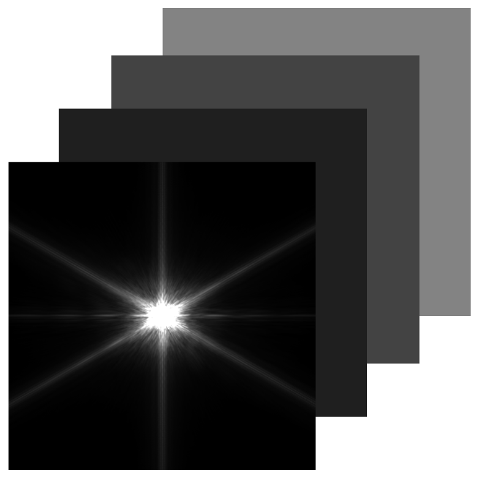
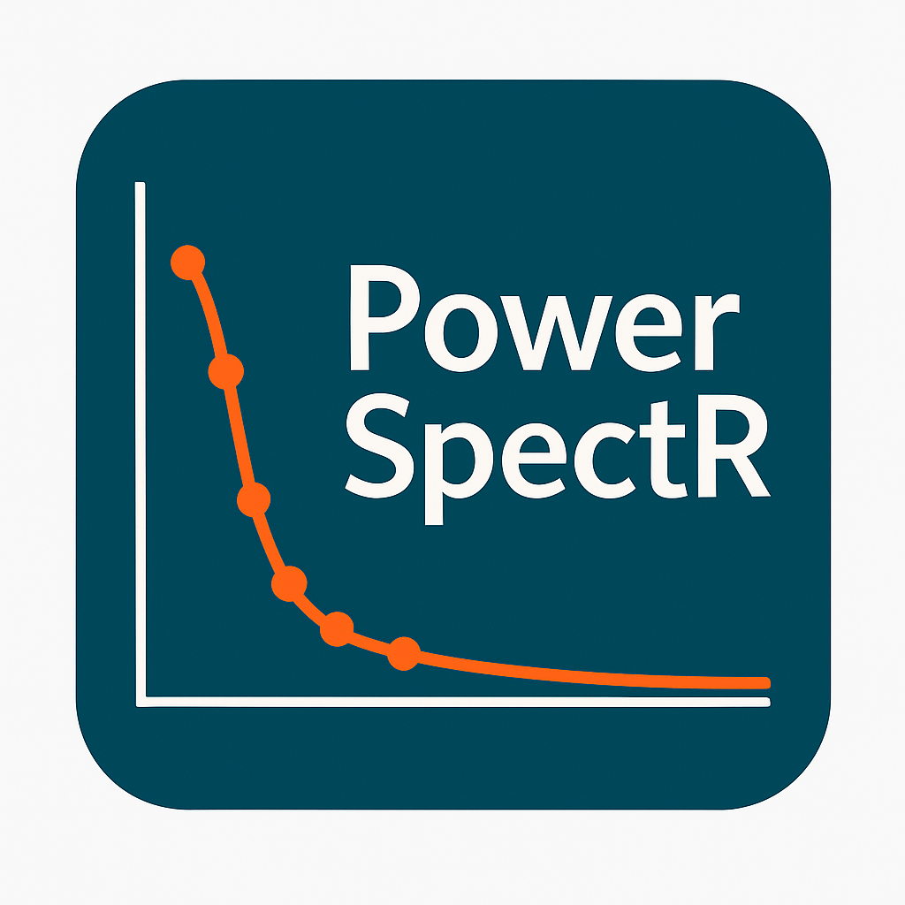
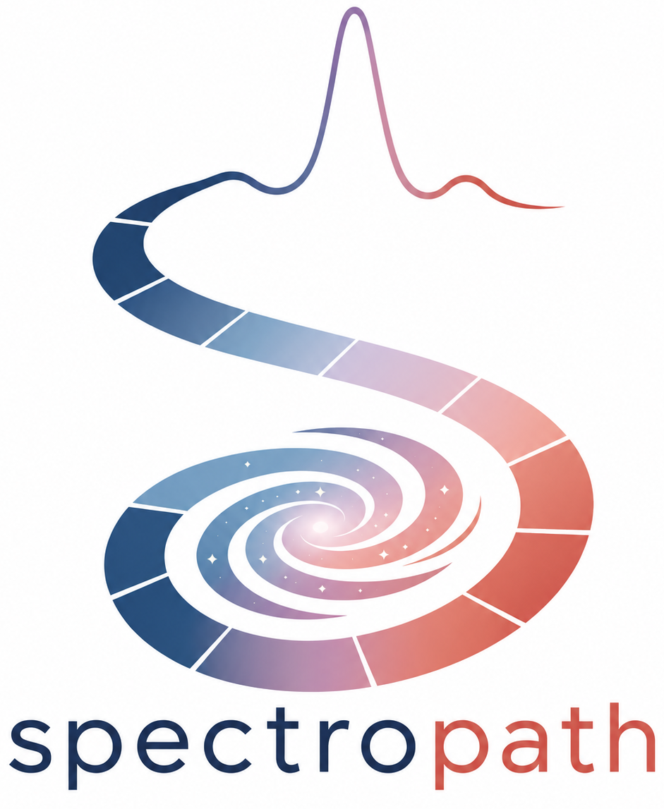
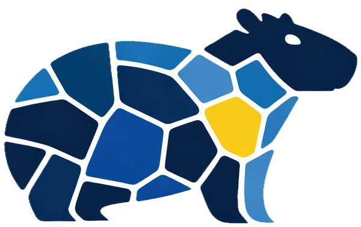
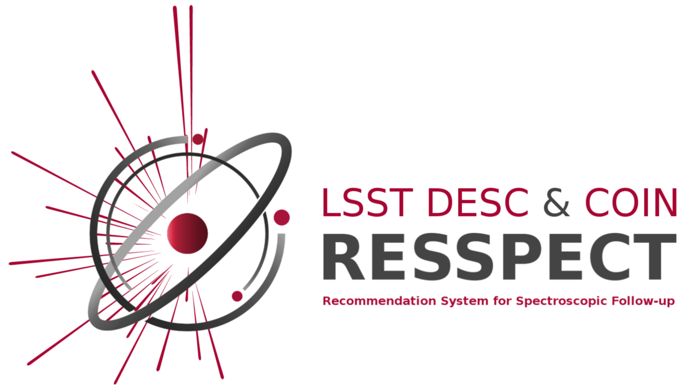
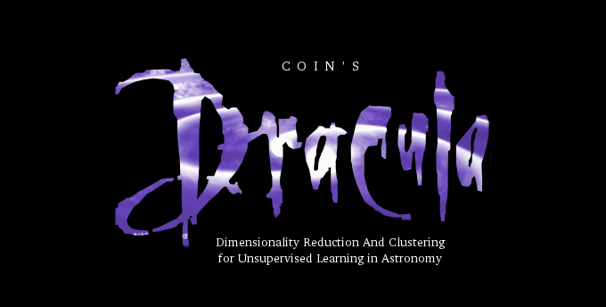

2026
Published and released
SED-based segmentation of multiband galaxy images.
Resolved galaxy structure in imaging surveys, including faint diffuse components.
25 projects · 18 published packages · 6 research systems · 1 in development
2026
Published and released
SED-based segmentation of multiband galaxy images.
Resolved galaxy structure in imaging surveys, including faint diffuse components.
2026
Published and archived release

Crop, PSF-match, and stack multiband images into photometric data cubes.
Consistent preparation of registered multiband observations.
2026
Published and released
Estimate projected galaxy-bar major axes from fitted ellipses.
Reproducible orientation measurements for resolved galactic bars.
2026
Published and archived release

Compute median radial Fourier power spectra of astronomical images.
Compact summaries of morphological structure across spatial scales.
2026
Published and released
Regularised non-negative matrix factorisation of spectra with optional GPU acceleration.
Interpretable low-rank spectral components under non-negativity and smoothness constraints.
2026
Public preprint and released package
Construct centre-conditioned radial profiles for connected structures with multiple centres.
Radial structure when a feature's assigned position depends on the adopted centre and source footprint.
2026
Public preprint and released package

Compute ordered path signatures of spectral-line profiles.
Line morphologies that share widths or moments but differ in ordered velocity–flux structure.
2025
Published and released

Segment IFU cubes by spectral similarity.
Resolved galaxy analysis without a prescribed morphological decomposition.
2024
Published and released
Fit galaxy surface-brightness profiles with GPU acceleration.
Scalable structural modelling of galaxy images.
2024
Published research system
Filter alert streams for hostless extragalactic transients.
Rapid identification of candidates whose missing hosts carry physical information.
2023
Published; ASCL release
Find cosmic-web ridges on spherical and conic geometries.
Curvilinear structure in fields whose geometry is not planar.
2023
Published companion code
Construct inspectable graph orderings of Type II supernova spectra.
Continuous spectral diversity and outliers without a fixed class boundary.
2023
Published broker module
Filter broker alerts for fast kilonova candidates.
Early selection of rapidly evolving multimessenger counterparts.
2022
Published and released
Accelerate principal-component calculations through QR decomposition.
Low-rank analysis of large matrices with optional GPU computation.
2022
Published and released
Construct unsupervised masks for galaxy images.
Separate galaxy structure from background without labelled masks.
2022
Published and released
Denoise and reconstruct data with singular-value decomposition and error propagation.
Recover low-rank signal while retaining uncertainty information.
2021
Published companion code
Reproduce and extend ridge finding in DES weak-lensing mass maps.
Curvilinear structure in noisy projected mass fields.
2020
Published research system

Recommend spectroscopic follow-up for transient classification.
Sequential label acquisition under object-dependent observing costs and finite telescope time.
2019
Published research system
Apply active learning to supernova photometric classification.
Select informative spectra from an evolving transient candidate pool.
2016
Archived CRAN release
Provide R functions, data, and examples for binary and binomial models.
Reproducible generalized-linear-model analyses of discrete responses.
2015
ASCL release; paper published 2016

Reduce and cluster supernova spectra.
Unsupervised comparison of heterogeneous transient spectra.
2015
Published and released
Run population Monte Carlo approximate Bayesian computation for cosmology.
Cosmological inference from simulations when the likelihood cannot be evaluated.
2015
Published and released
Explore multidimensional astronomical catalogues interactively.
Inspect relationships and structure in high-dimensional catalogue data.
2014
ASCL release; method paper published 2015
Estimate photometric redshifts with generalized linear models.
Positive-response regression for galaxy redshift estimation.
—
In development
Estimate spatially regularised non-negative components in IFU cubes.
Low-rank spectral decomposition that respects spatial coherence.